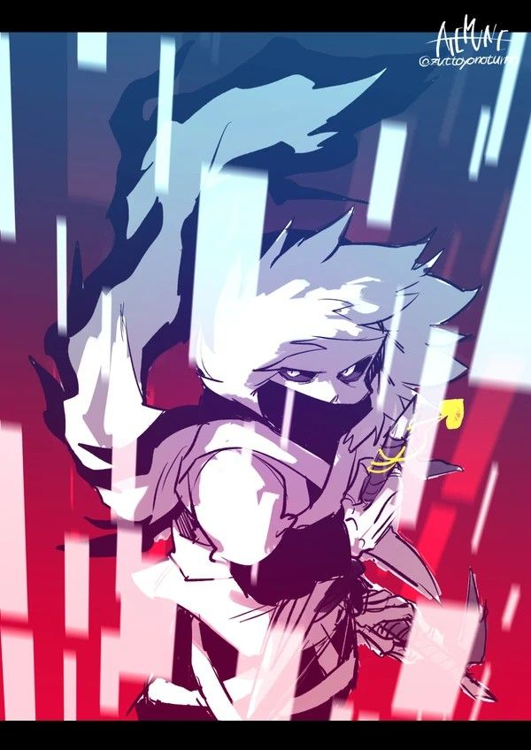

Cross
Cross, originalmente chamado como sans, era um membro da guarda real ao lado de seu irmão papyrus que foram treinados para proteger frisk de perigos por ser um simbolo de paz entre humanos e monstros.
depois de estar tendo alguns pesadelos onde seu amigo frisk esta matando todos os seus amigos ele começa a ficar bastante confuso do pq ele esta tendo esses sonhos estramhos

poderes
- invocar ossos
- invicar um blaster
- teletransporte